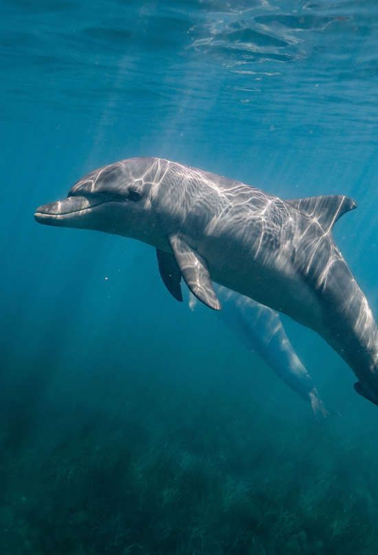
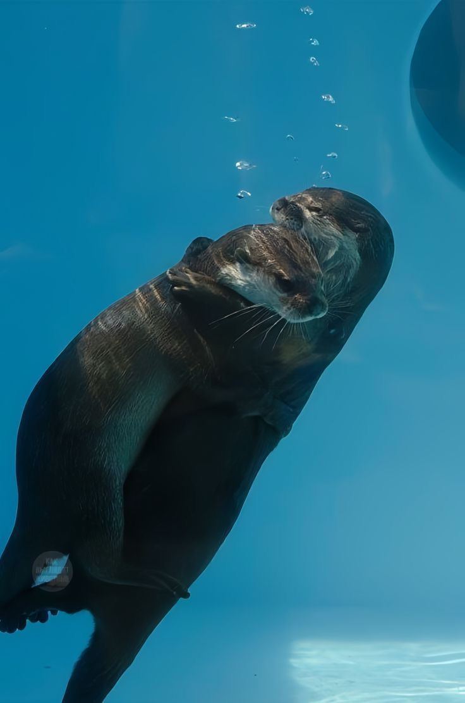
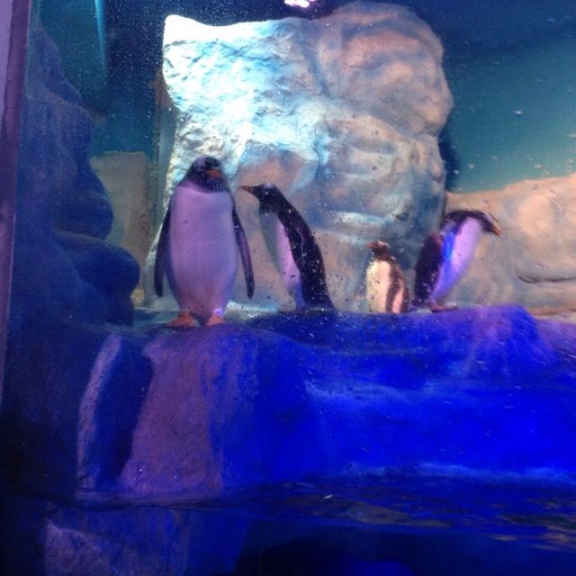
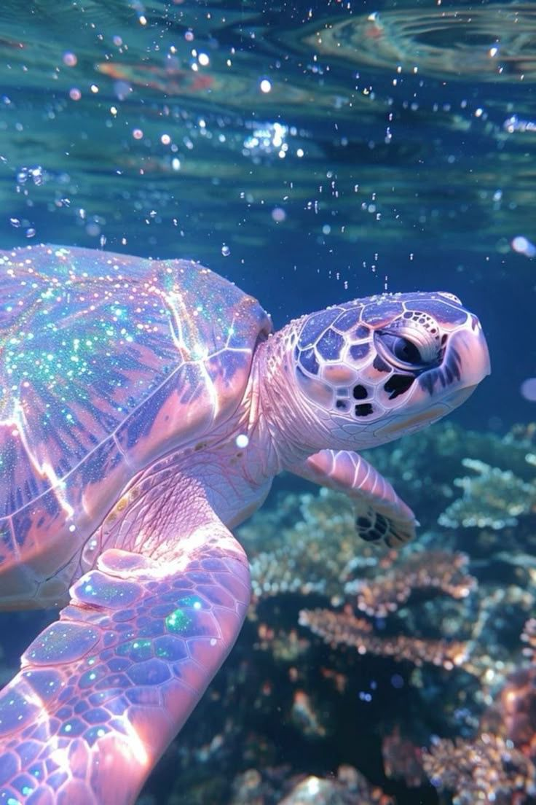
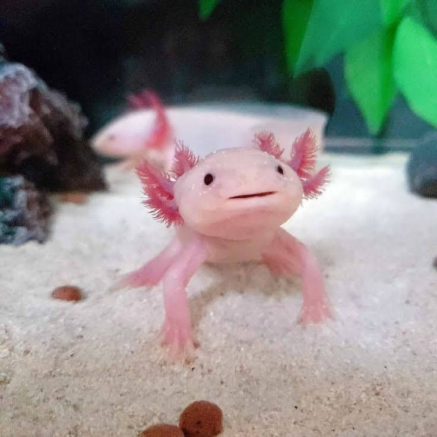
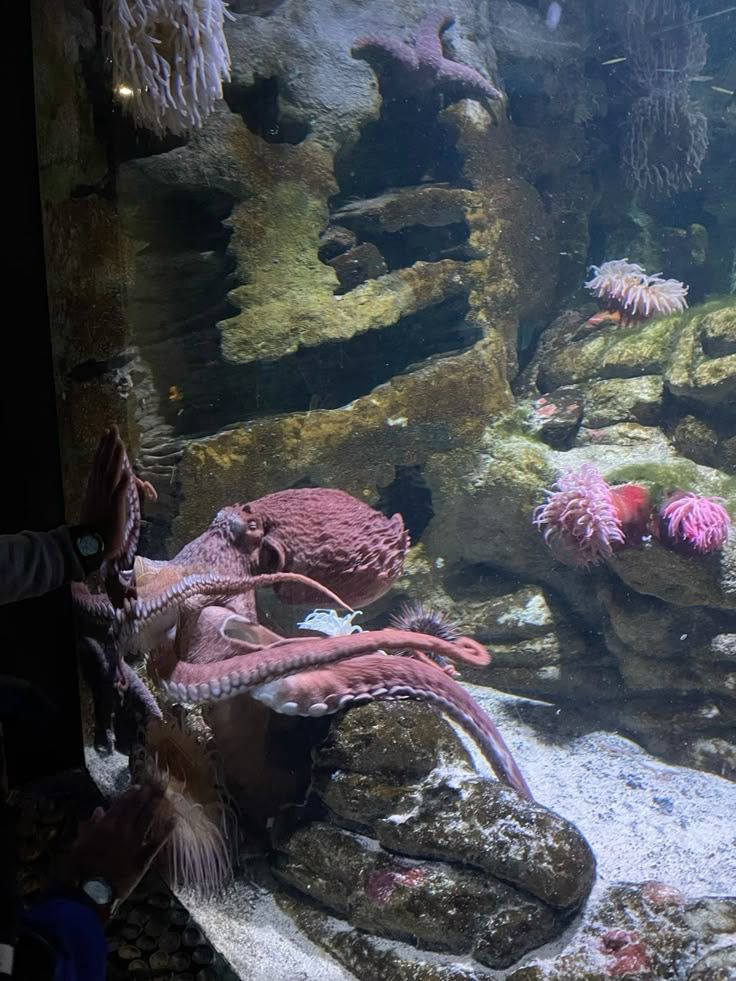
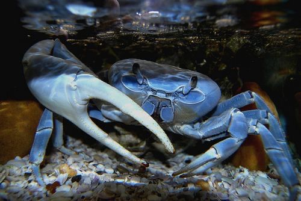
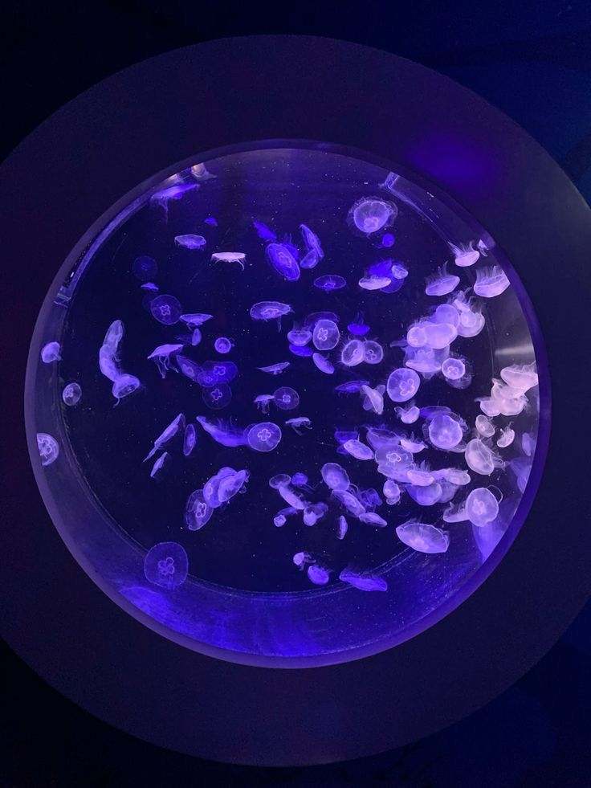
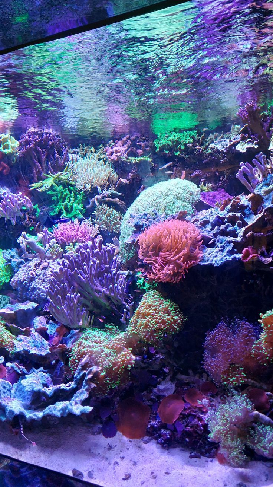
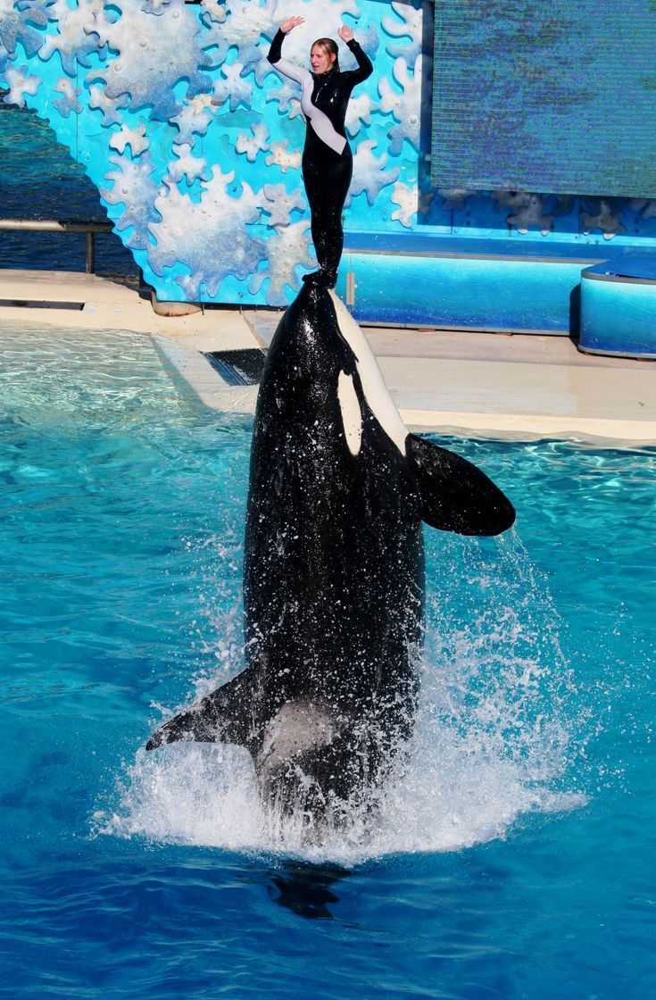

Las focas son criaturas marinas fascinantes conocidas por su pelaje suave y capacidad para nadar con gran agilidad.

DELFINES
Los delfines son mamíferos marinos inteligentes y sociales conocidos por sus sonrisas y saltos en el agua

NUTRIAS
Las nutrias son mamíferos semiacuáticos adorables y juguetones, conocidos por su pelaje suave y su habilidad para nadar y bucear.

PINGÜINOS
Los pingüinos son aves NO voladoras que se caracterizan por su cuerpo adaptado a nadar y bucear en el agua.

TORTUGAS
Las tortugas son reptiles que tienen un caparazón duro y protector que les permite defenderse de depredadores.

AJOLOTES
Los ajolotes se caracterizan por su cuerpo alargado y aplanado, patas cortas y débiles.
MANTA RAYA
Las manta rayas son peces planos y grandes con aletas que se asemejan a las alas.

PULPO
El pulpo es un molusco cefalópodo con 8 brazos flexibles y una cabeza bulbosa.
ESTRELLAS DE MAR
Las estrellas de mar se caracterizan por su cuerpo estrellado y con 5 o más brazos.

CANGREJOS
Los cangrejos son crustáceos con caparazón duro y 5 pares de patas.

MEDUSAS
Las medusas se caracterizan por su cuerpo gelatinoso y forma de campana con tentáculos.
PEZ PAYASO
El pez payaso se caracteriza por su cuerpo pequeño y colorido con franjas naranjas y blancas.
CABALLITO DE MAR
El caballito de mar son peces pequeños, con una cabeza que recuerda a la de un caballo y un cuerpo y cola están cubiertos de anillo concéntricos.

CORALES
Los corales son una clase de colonia de animales que se relacionan con los hidrozoos, las medusas y las anémonas de mar.

ORCAS
Son conocidas por su distintivo patrón de color negro y blanco, y su capacidad para cazar una amplia variedad de presas, desde peces hasta otros mamíferos marinos.